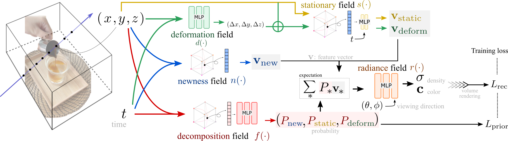

| NeRFPlayer A Streamable Dynamic Scene Representation with Decomposed Neural Radiance Fields |
|
Liangchen Song1 Anpei Chen24 Zhong Li3 Zhang Chen3 Lele Chen3 Junsong Yuan1 Yi Xu3 Andreas Geiger4 1 University at Buffalo 2 ETH Zürich 3 OPPO US, InnoPeak Tech 4 University of Tübingen |
| Paper Code (nerfstudio version) |
Video
Overview
| Visually exploring in a real-world 4D spatiotemporal space freely in VR has been a long-term quest. The task is especially appealing when only a few or even single RGB cameras are used for capturing the dynamic scene. To this end, we present an efficient framework capable of fast reconstruction, compact modeling, and streamable rendering. First, we propose to decompose the 4D spatiotemporal space according to temporal characteristics. Points in the 4D space are associated with probabilities of belonging to three categories: static, deforming, and new areas. Each area is represented and regularized by a separate neural field. Second, we propose a hybrid representations based feature streaming scheme for efficiently modeling the neural fields. Our approach, coined NeRFPlayer, is evaluated on dynamic scenes captured by single hand-held cameras and multi-camera arrays, achieving comparable or superior rendering performance in terms of quality and speed comparable to recent state-of-the-art methods, achieving reconstruction in 10 seconds per frame and real-time rendering. |
|  |
Citation
@misc{song2022nerfplayer,
title={NeRFPlayer: A Streamable Dynamic Scene Representation with Decomposed Neural Radiance Fields},
author={Liangchen Song and Anpei Chen and Zhong Li and Zhang Chen and Lele Chen
and Junsong Yuan and Yi Xu and Andreas Geiger},
year={2022},
eprint={2210.15947},
archivePrefix={arXiv},
primaryClass={cs.CV}
}